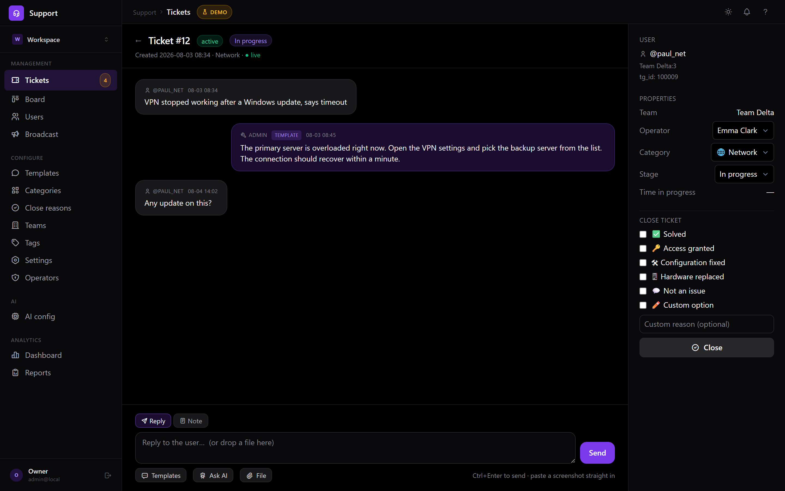
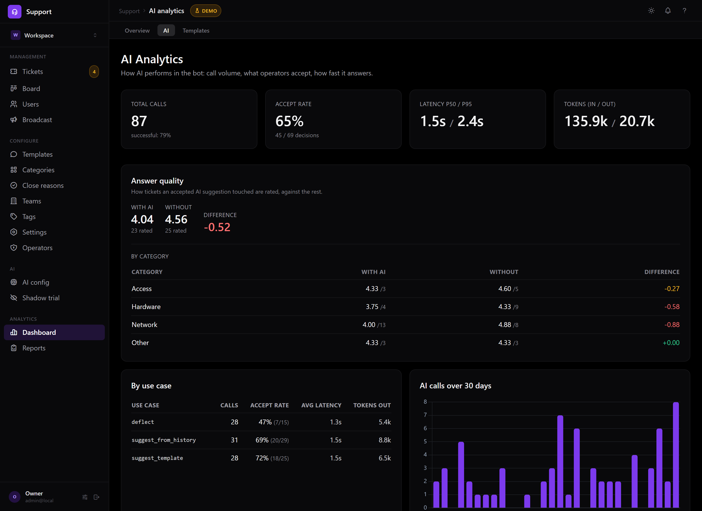

Dashboard, a ticket thread and AI analytics. All names and numbers are synthetic demo data.
Every ticket is a thread in your Telegram admin group, so agents answer where they already work. AI resolves what it can before a human is needed. A full web dashboard is there when you want metrics — not because the tool forces you into it.
No signup for the demo · admin@local / admin


Dashboard, a ticket thread and AI analytics. All names and numbers are synthetic demo data.
Every other helpdesk asks them to move into a second inbox. That's where adoption dies.
A ticket opens as a forum thread in your admin group. Reply there and the user gets it. Attachments, templates and AI drafts are one tap away — no context switch.
Right after a ticket is created, Spooldesk tries to solve it from your templates and resolved tickets. Confident answers only — and the deflection rate is a metric on your dashboard, not a marketing claim.
First-response and resolution times, CSAT, per-operator load, period reports with deltas and Excel export — for the manager who has to report upward.
No feature gates. No per-seat maths. It's all in the box.
Categories, attachments, two-way relay, full history per ticket, user verification and blocking.
Reply drafts from your knowledge base for agents, plus opt-in self-service answers for users. Accept rate tracked per use case.
Users rate support 1–5 right in Telegram after a ticket closes. Immutable score, surfaced as a dashboard KPI.
First responder auto-claims a ticket. Per-operator accounts with argon2 passwords, three roles, CSRF and login rate limiting.
Full-text search across messages, users and categories — Unicode-correct, not ASCII-only. Excel export respects your filters.
Schedule with timezone and overnight shifts. Outside hours the bot sets expectations automatically.
"Awaiting reply" counter in the sidebar and opt-in browser notifications when a new ticket lands.
Users get the bot in English, Russian or Ukrainian. The dashboard ships in English and Russian.
A single SQLite file you can back up with cp. Secrets scrubbed before anything reaches an LLM.
| Spooldesk | Chatwoot / Zendesk / Freshdesk | |
|---|---|---|
| Where agents work | Telegram threads — web optional | A separate inbox app they must adopt |
| AI deflection | Built in, opt-in, rate measured | Paid add-on or absent |
| Deployment | One container, SQLite, 5 minutes | Rails/Postgres/Redis stack — or SaaS only |
| Cost of a 5-person team | $0 self-hosted, unlimited operators | Typically $75–250 / month |
| Where your data lives | Your server, one file | Their cloud (or your own ops burden) |
Fair warning: those tools are broader products. If you need email, live chat widgets, Instagram and a public knowledge base in one place, they will serve you better. Spooldesk is deliberately narrow — Telegram, done properly.
You need a Telegram bot token and a group chat. That's it.
# 1 — get the code
git clone https://github.com/spooldesk/spool.git && cd spool
# 2 — interactive setup (asks for the bot token, generates all keys)
python scripts/setup.py
# 3 — run bot + dashboard
docker compose up -d --build
Dashboard on :8000. Full guide in
DEPLOY.md.
Self-hosting is free and always will be.
Your server, your data, no limits.
We host it. You just add your bot token.
Running Spooldesk for your own clients as part of IT services is fine and free. Reselling it as a hosted service needs a commercial licence — just ask.
Not by the OSI definition, and I won't pretend otherwise. Spooldesk uses the Business Source License 1.1 — the same model as Sentry. You get the full source, can run it in production for free, modify and fork it. The one restriction: you can't resell Spooldesk as a hosted service. Every release turns into Apache 2.0 four years after publication, so nothing can be taken away from you later.
Only what your provider charges. Spooldesk talks to Google Gemini with your own API key, and the AI layer sits behind a provider-agnostic interface, so swapping in another model is a small change. Without a key Spooldesk simply runs as a plain ticket system — nothing breaks.
Self-hosted Spooldesk sends nothing home — there is no telemetry, no licence check, no analytics. The only outbound traffic is Telegram, and your LLM provider if you enable AI. Ticket text is run through a secret scrubber first, and you can exclude whole categories from AI entirely.
Telegram, which they already have. They message your bot — no portal, no account, no password to forget. Agents need Telegram too; the web dashboard is for whoever wants filters, search and reports.
It ships with 283 automated tests covering auth, access control, migrations and the AI safety gates. It is also a young project maintained by one person — so evaluate it on the live demo, and open an issue when something is off. SQLite fits small and mid-sized teams comfortably; PostgreSQL support is on the roadmap for larger installs.
It is the same widget you would paste into your own site, talking to the same demo instance. Write something in it, then open the dashboard and find your message sitting in the queue as an ordinary ticket — with a stage, an SLA clock and a reply box. Reply to yourself and watch it come back to the bubble.
The demo instance is shared, so anything you write there is visible to everyone else looking at it. Please don't type anything you would mind a stranger reading.
<script src="https://help.yoursite.com/widget/embed.js" async></script>
One tag, no build step, no npm. The launcher lives in a shadow root and the panel in an iframe, so your stylesheet and ours never meet.
The demo is a full dashboard on synthetic data. Click anything.